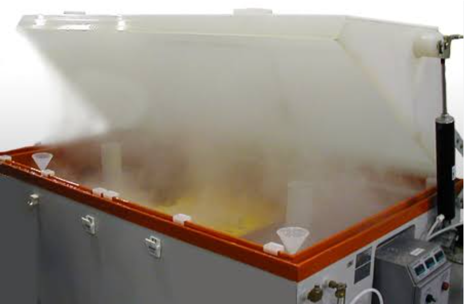
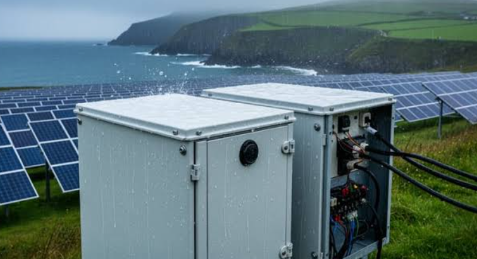
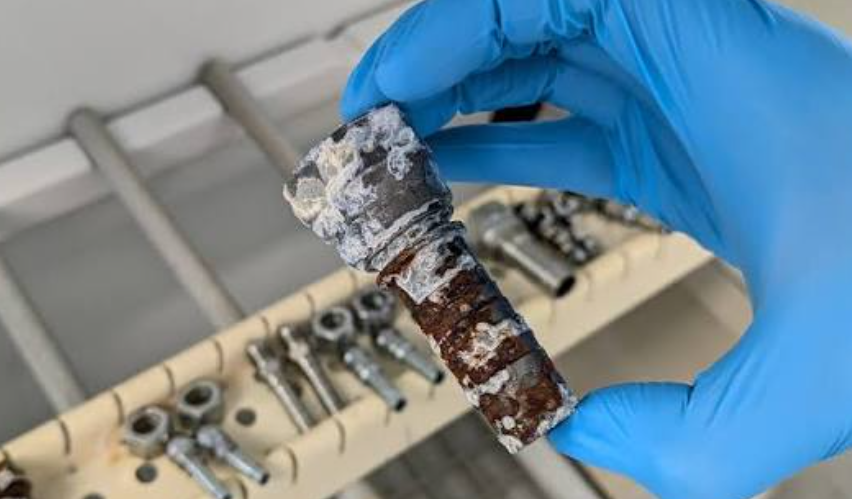
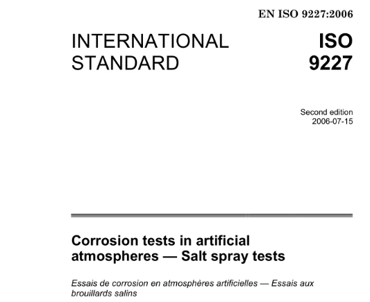
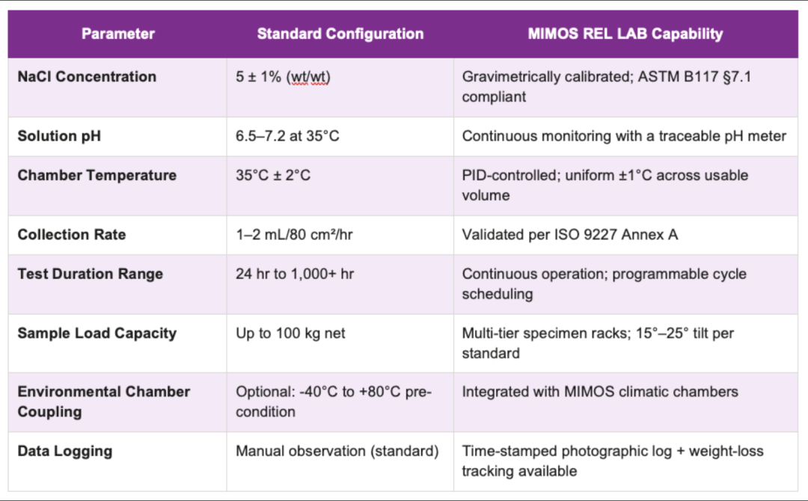
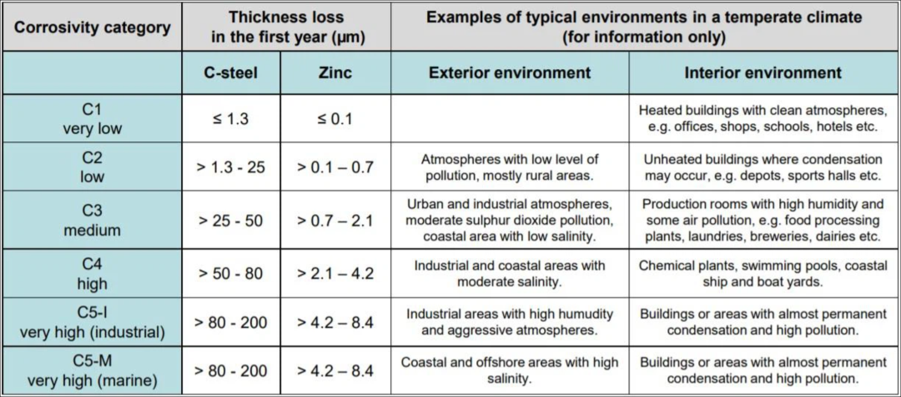

俗话说，天上一日，地上一年\~
有个问题不知道大家思考过没有，为什么产品工作寿命要求10年，盐雾试验却只要求48小时？当然还有要求24h的、96h的或者240h的，那盐雾试验的原理与寿命换算到底该怎么做呢？
48小时盐雾是不是就等于10年寿命？既然48小时能代表10年，那做480小时是不是就等于100年？事实上，这两种理解都不正确，盐雾试验不是寿命试验，而是一种加速腐蚀试验。它的目的并不是模拟产品工作10年，而是快速暴露产品在腐蚀环境下存在的设计缺陷。

那么，盐雾试验到底是怎么来的？为什么很多产品只要求48小时？盐雾时间究竟能不能换算成实际工作寿命？接下来咱们就聊聊这个话题。
为什么要做盐雾试验？
现实中的电子产品，并不是一直工作在实验室，它可能安装在海边，光伏板上，新能源车上，船上等等，这些环境都有一个共同特点：空气中含有大量盐分，尤其是海洋环境。

那么空气中的NaCl颗粒不断吸附在PCB、连接器、金属外壳表面。当空气湿度超过一定程度时，盐分开始吸水，形成导电电解液，此时金属腐蚀速度急剧增加。例如铜会氧化，镀锌层会失效，铝合金会点蚀了，连接器接触电阻不断增大。最终导致接触不良，短路，漏电，外壳锈蚀，密封失效。

因此很多工业产品都会要求进行盐雾试验。目的就是提前发现材料、镀层和结构设计存在的问题。
那盐雾试验到底测什么？
很多人认为盐雾试验就是喷盐水，等生锈，实际上国际标准对盐雾试验规定得非常严格目前最常用的是IEC 60068-2-11，ASTM B117，ISO 9227其中ISO 9227应用最广。

标准规定试验箱持续喷射5%的NaCl溶液，温度保持35℃，PH值一般控制6.5～7.2，喷出的并不是水滴，而是连续均匀的盐雾。这样产品表面始终覆盖一层盐膜，腐蚀速度远高于自然环境。因此，它属于加速腐蚀试验，而不是自然寿命试验。
那为什么是5%的盐？
很多人第一次看到规格都会觉得为什么不是海水？其实海水盐度约3.5%，而标准采用5%原因有两个，第一提高腐蚀速度，缩短试验周期，第二大量实验发现5%NaCl具有较好的重复性，不同实验室容易保持一致，毕竟做实验最重要的一点就是可重复性，因此几十年来全球基本都采用5%，而不是真实海水。

为什么产品寿命10年，只做48小时？
这其实是最容易误解的地方，有些硬件工程师认为48小时=10年，实际上标准从来没有这样规定，例如汽车行业的很多连接器要求96h盐雾，海工设备是可能720h，普通工业产品是24h，通信设备是48h。这些时间并不是寿命，而是行业经验。
例如某连接器经过大量实际统计，发现如果48h以后镀层没有腐蚀，那么在普通工业环境基本能够满足长期使用要求，所以48h或者96h实际上是一种可靠性门槛，而不是寿命换算。
盐雾试验为什么不能直接等于工作寿命？
很多网上文章都会写：24h≈1年，48h≈2年，96h≈4年，实际上，这种说法没有任何国际标准支持，原因很简单，现实环境变化太大，例如内陆城市，盐分极少，腐蚀速度很慢。但是海边盐分浓度可能提高几十倍，如果海南，广东沿海和西藏，同样产品，腐蚀速度完全不同。
另外盐雾箱35℃，100%持续盐雾，现实环境白天，晚上，下雨，干燥，不断变化，腐蚀机理完全不同，因此。盐雾试验不能简单换算成年限。不过，类似加速寿命测试，确实有盐雾的加速因子AF估算，最典型的方法就是根据ISO 9223腐蚀环境分类将自然环境划分为环境等级，腐蚀等级

不同环境，钢材一年腐蚀量可能相差几十倍，因此很多企业根据长期实验建立经验加速系数，例如普通工业环境AF≈20，海洋环境AF≈8，极端盐雾AF≈5，此时可以进行经验估算。例如48h盐雾，工业环境AF约等于20，则等效暴露时间≈48×20≈960h，约40天持续盐雾环境，注意这里仍然不是40天产品寿命，而是40天连续腐蚀暴露。
所以要记住腐蚀暴露时间不是产品寿命！
真正寿命还受到温湿度循环，紫外老化，振动，粉尘等因素的影响，所以没有任何标准能够说48h=10年。
总结来说就是盐雾试验不是寿命试验，而是加速腐蚀筛选试验，它的作用是快速暴露材料、镀层和结构设计中的薄弱环节，而不是直接预测产品能使用多少年，它验证的是产品的耐腐蚀能力，而不是简单地推算使用年限。48小时、96小时或480小时，只是行业依据经验和历史数据制定的验证门槛，并不存在48小时等于10年这样的统一换算关系。